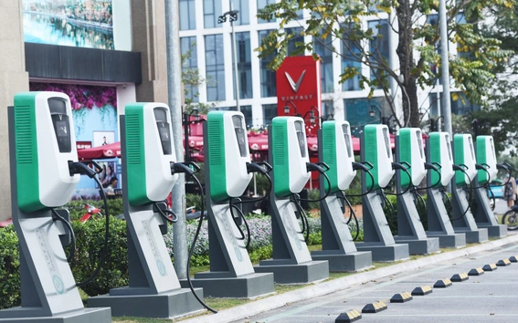
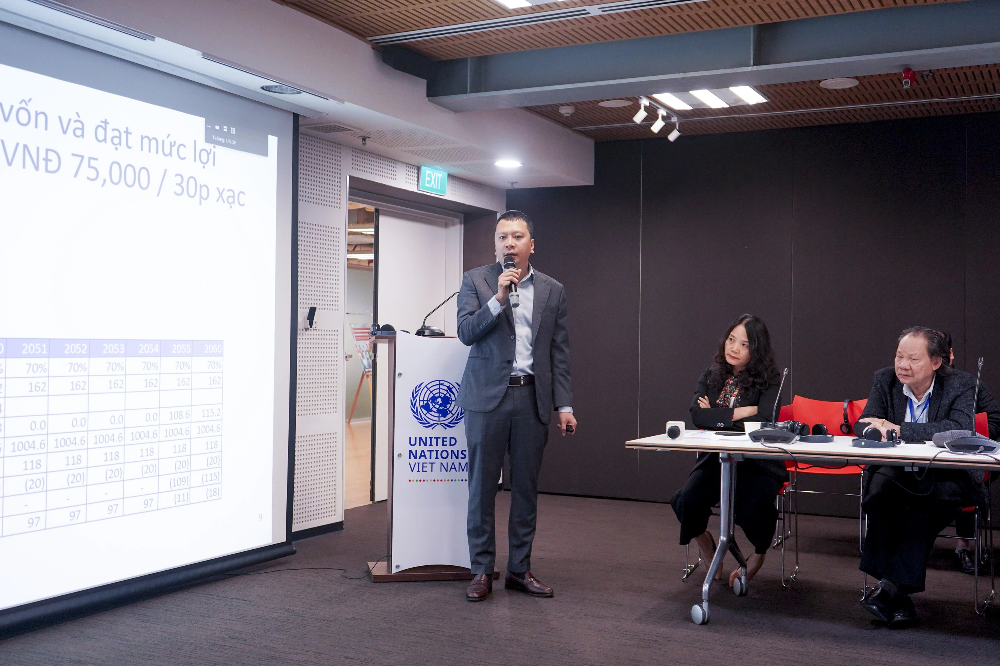

Tại hội thảo "Thúc đẩy chuyển dịch năng lượng và cơ chế chính sách đầu tư hạ tầng trạm sạc tại Việt Nam" do Chương trình Phát triển Liên hợp quốc (UNDP) và Cục Đường bộ Việt Nam (Bộ Giao thông vận tải) tổ chức ngày 13/3 tại Hà Nội, nhiều chuyên gia cho rằng, khả năng thu hút đầu tư tư nhân vào lĩnh vực này rất khả thi.
Theo các chuyên gia, Việt Nam đã đặt mục tiêu đến năm đến năm 2050, toàn bộ phương tiện giao thông cơ giới đường bộ, xe máy thi công tham gia giao thông chuyển đổi sang sử dụng điện, năng lượng xanh. Quá trình này, việc thúc đẩy phát triển hạ tầng trạm sạc là yếu tố không thể tách rời.
Song, tính đến năm 2021, chỉ có duy nhất VinFast sở hữu 150.000 cổng sạc được lắp đặt tại 63 tỉnh, thành trong cả nước.
Theo quy hoạch phát triển hạ tầng giao thông đường bộ, đến năm 2050, Việt Nam sẽ xây dựng hơn 9.000km đường cao tốc, gấp gần 8 lần hiện tại. Các cao tốc sẽ có trạm dừng nghỉ và đây là nơi có thể đặt trạm sạc xe điện.
Với công nghệ xe điện hiện nay, pin xe điện thường cho phép xe đi được quãng đường khoảng 180-300km/lần sạc. Muốn đi đường dài chắc chắn cần trạm sạc dày đặc để có thể vừa đi vừa sạc trên đường.
Do đó, theo các chuyên gia, nhu cầu trạm sạc tại Việt Nam đang rất cao và là dư địa tốt để các nhà đầu tư trong nước khai thác.
Chia sẻ tại hội thảo, ông Nguyễn Thế Trọng, chuyên gia tài chính từng tham gia nhiều dự án giao thông, đánh giá khả năng thu hút đầu tư tư nhân vào lĩnh vực này rất khả thi.
Với 39 trạm nghỉ trên toàn tuyến cao tốc Bắc – Nam phía đông và giả định đến năm 2050 toàn bộ phương tiện lưu hành là xe điện, nhóm nghiên cứu của ông Trọng ước tính nhu cầu đầu tư khoảng khoảng 7.800 điểm sạc, trung bình khoảng 200 điểm sạc/trạm nghỉ.
Tính theo suất đầu tư năm 2024, sẽ cần khoảng 2,2 tỷ USD đầu tư cho giai đoạn 2025-2050.
Với ước tính chi phí mỗi lần sạc trong khoảng 30 phút và đầy khoảng 80% pin thì chi phí người tiêu dùng cần trả là khoảng 75 nghìn đồng.
Phí sạc này khá tương đồng so với thông lệ quốc tế. Khả năng chi trả của chủ sở hữu xe điện tốt hơn so với xe xăng do xe điện có chi phí vòng đời và vận hành tốt hơn.
"Nếu tính tỷ suất lợi nhuận cao hơn 4% so với lãi suất ngân hàng thì về lâu dài, các nhà đầu tư trạm sạc có thể hoàn vốn và có lãi", ông Trọng nói.
Chuyên gia này cho rằng, để thu hút đầu tư tư nhân vào phát triển hạ tầng trạm sạc, điều quan trọng nhất là phải đẩy nhanh tốc độ chấp nhận xe điện. Đồng thời, lĩnh vực tư nhân cần được phép thu phí dịch vụ sạc để thu hồi vốn.
Ông khuyến nghị Bộ Tài chính cùng Bộ GTVT phối hợp để nghiên cứu và quy định phí dịch vụ sạc, từ đó đảm bảo chi phí hợp lý cho người tiêu dùng.
Tổng biên tập: Nguyễn Thị Hồng Nga
Phó Tổng biên tập: Nguyễn Đức Thắng
Giấy phép số 522/GP-BTTTT cấp ngày 28/10/2022
Tòa soạn: Số 2, Nguyễn Công Hoan, Ba Đình, Hà Nội.
Hotline: 0901 514 799; Liên hệ quảng cáo phát hành: 0915.057.282
Email: bandoc@baogiaothong.vn